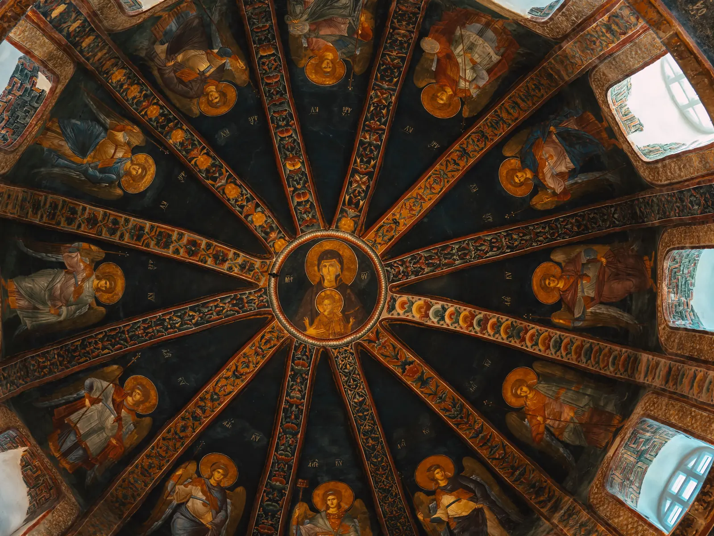
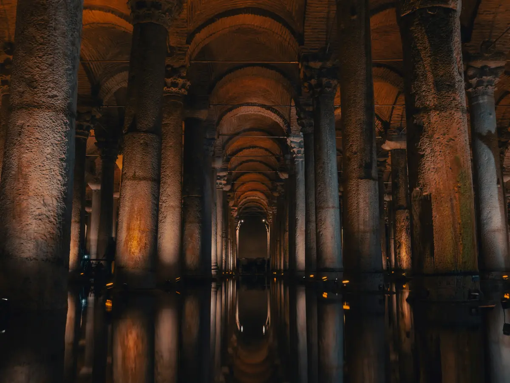
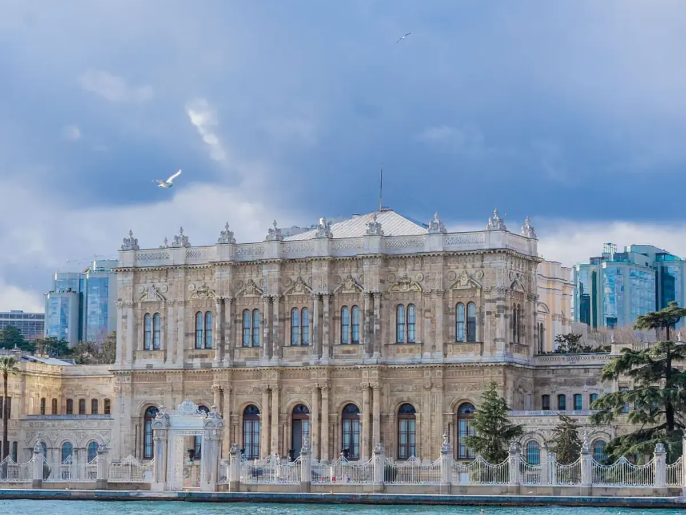
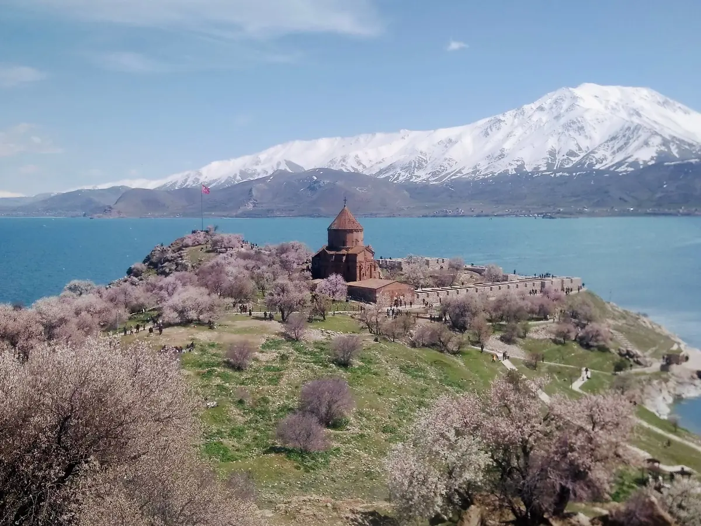
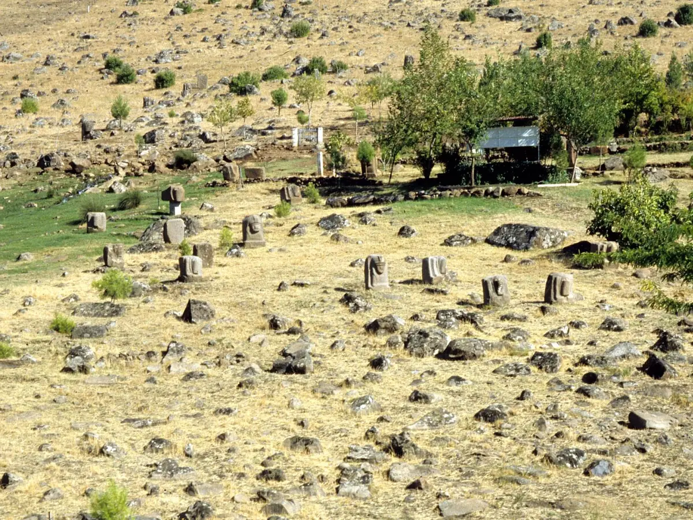
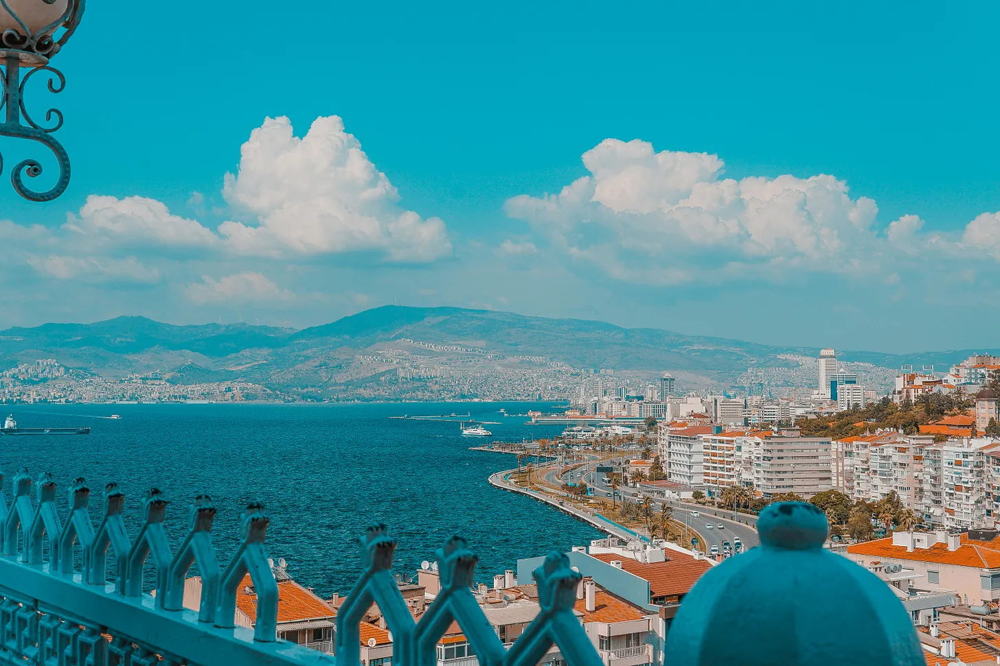
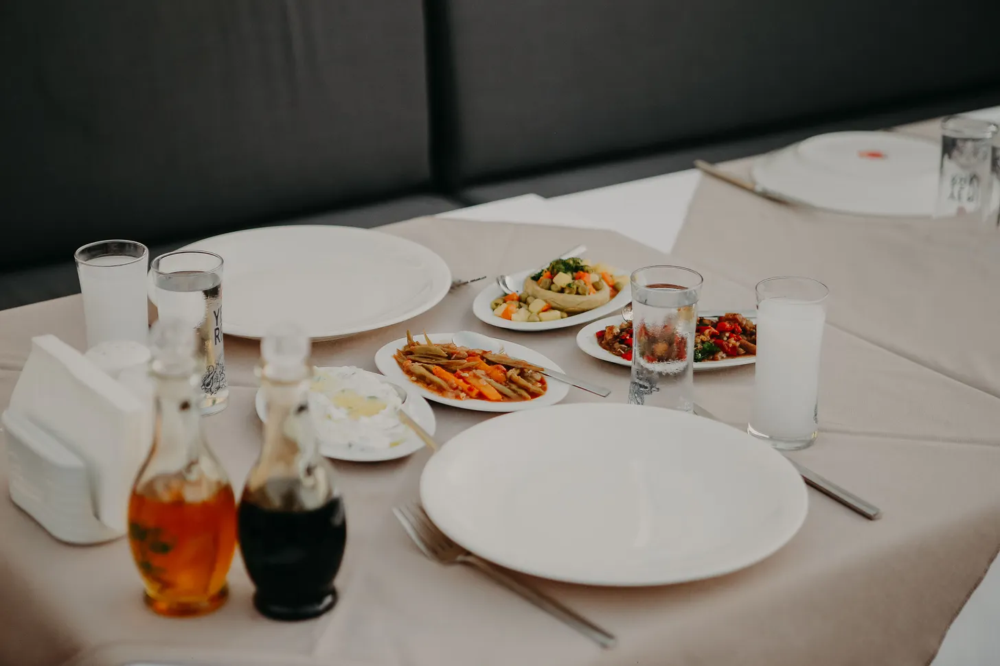

Via Vestigia Journal
Long-form essays on the cities, empires, rituals, and everyday culture that shaped the places Via Vestigia walks — Istanbul first, the wider Mediterranean as the work continues.
Read the Journal →Featured

Beyond Hagia Sophia · Part III
A pagan temple becomes a church. A church becomes a mosque. Sometimes the museum becomes a mosque again. How Istanbul's places of worship kept changing faiths without ever fully erasing the one before.
Read on Substack →Selected from the Journal

Istanbul · Infrastructure

Beyond Hagia Sophia · Part II

Capital Chronicles · #2

Artist Chronicles · #2

The Water Chronicles · #2

Istanbul Culinary · Part II
From Reading to Walking
A few Journal essays have a physical counterpart — the same history, walked in person, with a licensed guide.
"Non terminus, sed ambulatio." Not a destination, but a walk.
Read all stories on Via Vestigia Journal →